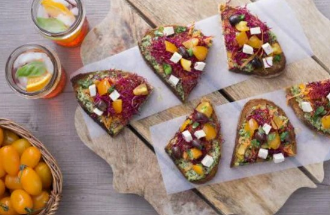

-
Pasta alla carbonara
- 4.2
- Facile
- 15 minuti

-
Pollo con arance
- 3.9
- Difficile
- 1 ora
-
Riso al curry
- 3.9
- Facile
- 30 minuti
-
Crostino vegano
- 4.5
- Facile
- 20 minuti
e ora scegli cosa cucinare!
e ora scegli cosa cucinare!